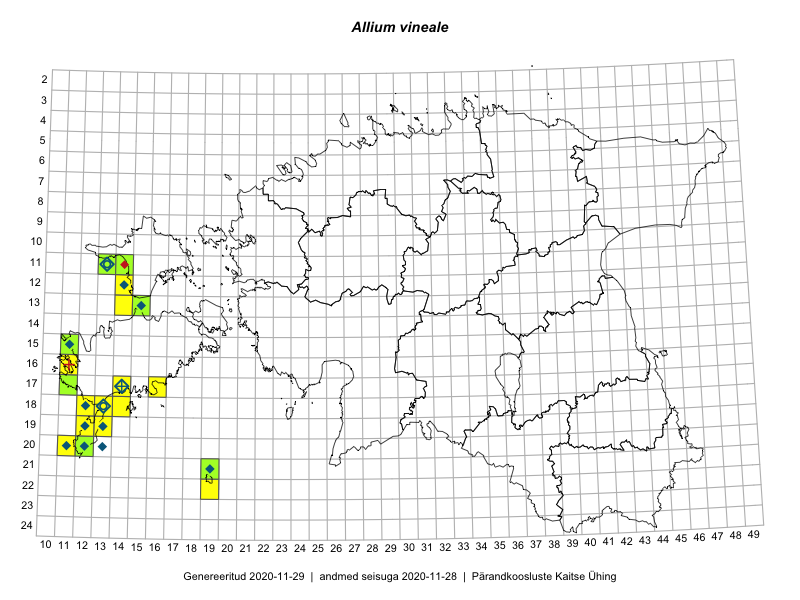

Allium vineale
Uuendatud: 2016-12-08
Kaardile koondatud taksonid: Allium vineale L.

Kaart põhineb 21 vaatlusel. Taime on leitud 11 ruudust.
| Ruut | Vaatleja(d) | Vaatlusaeg | Kirje tüüp | Viide andmebaasikirjele |
|---|---|---|---|---|
| 13-14 | Toomas Kukk, Eerik Leibak | 2015-08-10 | ruut/ala | vaata PlutoFis |
| 13-14 | Toomas Kukk, Eerik Leibak | 2015-08-10 | punkt | vaata PlutoFis |
| 13-15 | Toomas Kukk, Eerik Leibak | 2015-08-10 | punkt | vaata PlutoFis |
| 13-15 | Toomas Kukk, Eerik Leibak | 2015-08-10 | punkt | vaata PlutoFis |
| 13-15 | Toomas Kukk, Eerik Leibak | 2015-08-10 | punkt | vaata PlutoFis |
| 13-15 | Toomas Kukk, Eerik Leibak | 2015-08-10 | ruut/ala | vaata PlutoFis |
| 19-13 | Oliver Parrest | 2015-07-01 | ruut/ala | vaata PlutoFis |
| 20-11 | Mari Reitalu, Triin Reitalu | 2014-08-15 | ruut/ala | vaata PlutoFis |
| 18-12 | Mari Reitalu, Sirje Azarov, Oliver Parrest | 2015-08-02 | ruut/ala | vaata PlutoFis |
| 17-16 | Sirje Azarov, Aira Alasi | 2015-08-17 | ruut/ala | vaata PlutoFis |
| 17-16 | Sirje Azarov, Aira Alasi | 2015-08-17 | punkt | vaata PlutoFis |
| 20-12 | Oliver Parrest | 2015-08-15 | punkt | vaata PlutoFis |
| 18-12 | Oliver Parrest, Mari Reitalu, Sirje Azarov | 2015-08-02 | punkt | vaata PlutoFis |
| 17-14 | Toomas Kukk, Meeli Mesipuu, Johannes Kõdar | 2016-08-11 | ruut/ala | vaata PlutoFis |
| 12-14 | Toomas Kukk, Meeli Mesipuu | 2016-08-10 | ruut/ala | vaata PlutoFis |
| 21-19 | Meeli Mesipuu, Ott Luuk | 2016-09-10 | ruut/ala | vaata PlutoFis |
| 22-19 | Ott Luuk, Meeli Mesipuu | 2016-09-10 | ruut/ala | vaata PlutoFis |
| 21-19 | Ott Luuk, Meeli Mesipuu | 2016-09-10 | punkt | vaata PlutoFis |
| 21-19 | Ott Luuk, Meeli Mesipuu | 2016-09-10 | punkt | vaata PlutoFis |
| 22-19 | Meeli Mesipuu, Ott Luuk | 2016-09-11 | punkt | vaata PlutoFis |
| 17-14 | Meeli Mesipuu, Toomas Kukk, Johannes Kõdar | 2016-08-11 | punkt | vaata PlutoFis |